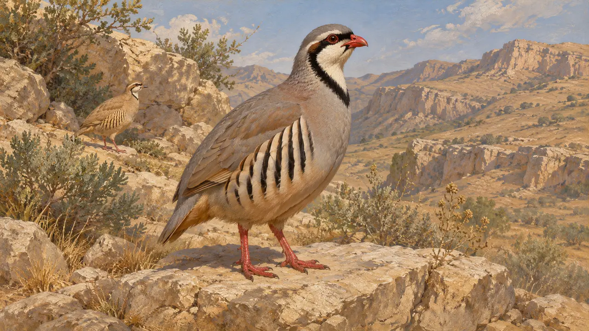
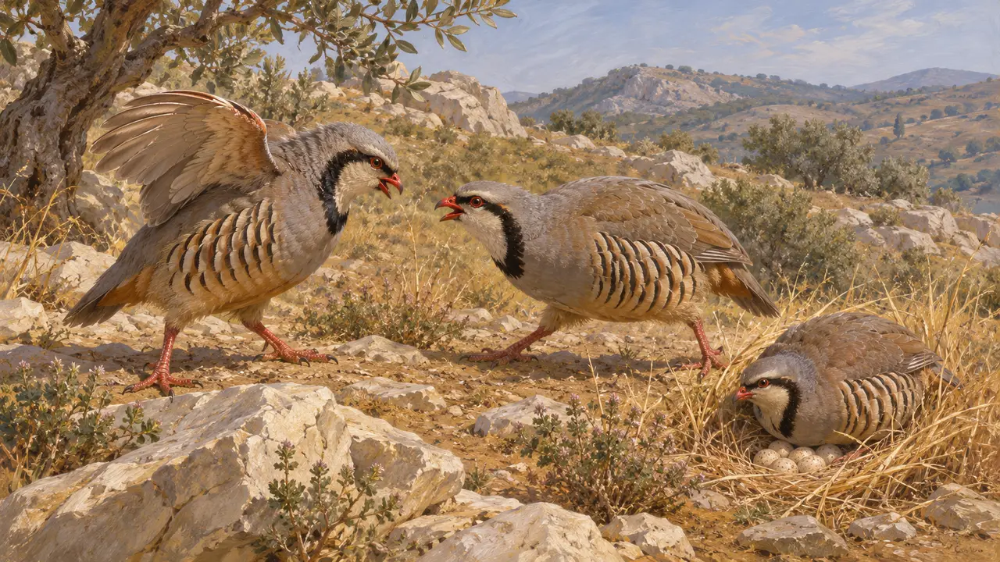
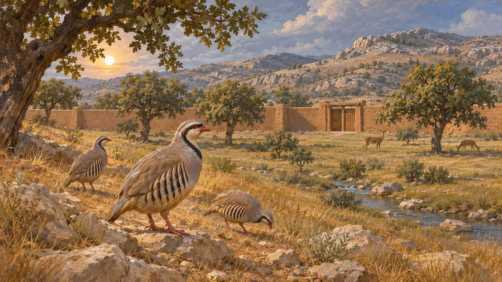
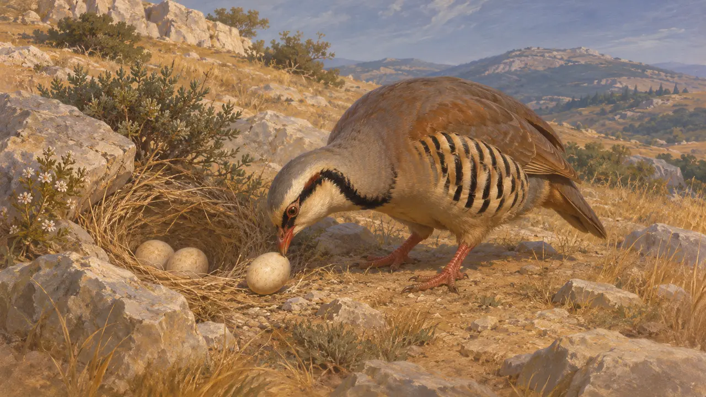

鹧鸪生活在伊朗高原和阿提卡干燥多石的山坡上,当地人很可能猎捕并食用它们。阿契美尼德世界中关于鹧鸪的文字证据很少,因此这一条目主要依据这种鸟的自然史和希腊人的几句评述。
游戏中： 游戏在帕萨尔加德、巴加斯塔纳、帕尔萨和马拉松关卡中将鹧鸪绘为背景景物,没有任何规则会读取它们。同一个模型同时代表石鸡、沙鹧鸪和阿提卡岩鹧鸪。

所指的是哪些鸟
古代记述现代动物学认为,石鸡和沙鹧鸪分布于伊朗高原的岩石山地,欧石鸡则分布于希腊的山地,包括阿提卡。石鸡与欧石鸡是近亲。古代作家并不这样区分物种,因此把他们笔下的鸟与现代物种对应起来只是一种推断。亚里士多德把鹧鸪描述为栖息于石地的鸟。
Aristotle, History of Animals

希腊著述中的鹧鸪
古代记述亚里士多德等希腊博物学家把鹧鸪描述为在地面筑巢、容易猎捕的鸟,并指出雄鸟好斗。希罗多德没有提供关于波斯各地鹧鸪的有用细节。这些说法出自希腊人之手,写的是希腊的鸟,并不能说明波斯人如何对待这种鸟。
Aristotle, History of Animals

狩猎与餐桌
争夺中波斯国王和贵族都设有围起来的苑囿,希腊语的 paradeisos 一词即源自一个伊朗语词汇。色诺芬描述过凯莱奈的这样一座苑囿,里面豢养着猎物。此处所用的史料并未表明鹧鸪是否在这类狩猎中被捕获,或是否被端上宫廷餐桌,因此任何此类图景都只是根据这种鸟的习性作出的猜测。
Xenophon, Anabasis 1.2.7; P. Briant, From Cyrus to Alexander, 2002

后世希腊传说中的鹧鸪
后世传说后世作家讲过一些道德故事，其中以鹧鸪象征淫欲或狡诈，还有人说它偷取其他鸟的蛋。这些故事属于博物学传说，写于波斯战争数百年之后，与波斯人的生活毫无关系。因此在此将它们单独列出。
Aelian, On the Nature of Animals
来源
- Aristotle, History of Animals
- Xenophon, Anabasis 1.2.7
- P. Briant, From Cyrus to Alexander, 2002
- Aelian, On the Nature of Animals